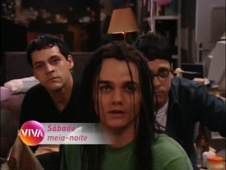
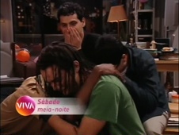
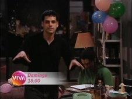
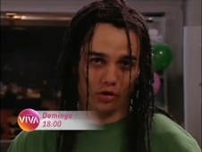
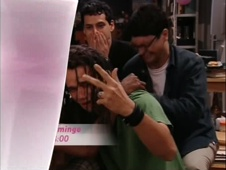
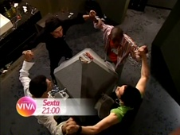
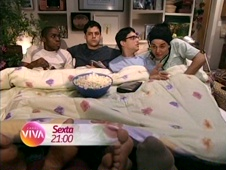

Sexo Frágil
| reprisada de | 22/05/2010 a 02/10/2010 (1º ciclo) |
|---|---|
| em 2 temporadas, com 20 episódios | |
| frequência | sábados |
| faixa | meia-noite |
| horário alternativo | dom, às 18h |
Série de comédia de João Falcão exibida, originalmente, entre 2003 e 2004 após o Globo Repórter. Quatro amigos vivem cômicas e absurdas situações baseadas nos relacionamentos afetivos entre homens e mulheres, demonstrando que o sexo frágil é, na verdade, o masculino. Os atores fixos (e convidados, quando necessário) do programa também são os intérpretes das personagens femininas presentes nos episódios. A 1ª temporada, mais experimental, não tinha uma continuidade bem definida e se assemelhava mais ao gênero seriado (histórias fechadas a cada episódio). A 2ª leva de episódios, em contrapartida, estruturou com mais coerência as tramas particulares dos 4 personagens e deu a cada ator uma personagem feminina fixa.
Quando o Viva estreou, Sexo Frágil era exibido aos sábados, à meia-noite, seguido de Som Brasil, à meia-noite e meia. Mas tal ordem só durou 2 semanas: em junho, a sequência foi alterada, e Som Brasil passou a entrar à meia-noite, empurrando Sexo Frágil para a uma da manhã. Apesar deste continuar sendo seu horário de exibição "inédita", as chamadas do programa passaram a destacar seu horário alternativo, nos finais de tarde de domingo.
Em 26/08/2010, nova alteração com adiantamento nos horários: Caldeirão do Huck, que tinha a edição da Globo apresentada no Viva nos sábados à noite, das 22h à 0h, perdeu esse horário e ficou só com o que antes exercia as vezes de alternativo, no domingo, às 13h. Som Brasil foi adiantado para às 23h, puxando junto Sexo Frágil de volta ao horário em que havia estrado, à meia-noite. Com a mudança, o horário principal voltou a ser o destacado pela promoção do programa nos intervalos do Viva.
A reprise da 2ª temporada, no 1º ciclo, deu-se em sequência estranhamente desordenada (consultar aba exibição). Essa 1ª fase da reprise foi encerrada em 02/10/2010, e a faixa da meia-noite de sábado foi assumida por Dicas de um Sedutor.
Naquele mês, o Viva realizou uma série de mudanças na estrutura original de sua grade. Sexo Frágil permaneceu no ar, mas mudou de dia e horário, integrando a nova faixa diária de humor - que apresentava atrações diferentes a cada dia da semana, de segunda-feira a sexta-feira, das 21h às 22h. Assim, nesse 2º ciclo, Sexo Frágil era exibido todas as sextas-feiras, às 21h, seguido de Vida ao Vivo Show, estreante no Viva, às 21h30. Com as alterações na programação, o programa perdeu o seu horário dominical, assumido como alternativo para Som Brasil após a reformulação da grade, e ficou sem exibições alternativas.
O último episódio da série foi exibido na sexta-feira de 18/02/2011. Na semana seguinte, Sexo Frágil foi substituído por Brasil Legal.
Sexo Frágil chegou a ganhar uma nova reprise no Viva a partir de 22/05/2015, às 23h das sextas-feiras com exibição alternativa às 20h30 dos sábados e às 22h30 das sextas-feiras (atencedendo o próprio horário principal). Em julho, o horário principal, às sextas-feiras, foi antecedido para o trecho antes alternativo, meia hora antes: isso ocorreu porque o Viva ensaiou uma reativação de sua faixa de minisséries, às 23h, com uma 2ª reprise de A Muralha. Em agosto, no entanto, Sexo Frágil saiu do ar antes mesmo de atingir um ciclo completo. O horário foi ocupado por uma exibição alternativa de Mr. Bean (que era exibido às segundas, às 21h).
chamadas
A chamada inicial para a exibição de Sexo Frágil no Viva, exibida em maio, apresentava o elenco fixo da série com a cena que finaliza o 1º bloco do 1º episódio do programa, com o texto exclamado pelos 4 personagens principais: "Deus criou a mulher. O homem descende do macaco, mas a mulher foi Deus que criou. Paciência. Quando Deus criou a mulher, ele determinou que ela reinaria sobre toda a criação: claro, era a sua obra mais bem acabada. Mas o diabo andou mexendo na lata de lixo de Deus, e com o que sobrou da mulher, ele criou um homem. E, hoje, estamos aqui."
- 
- 
Em junho, com a já mencionada inversão de horários entre Sexo Frágil e Som Brasil nas noites de sábado, essa mesma chamada teve os caraceteres atualizados para destacar a exibição aos domingos, às 18h.
- 
- 
- 
Sexo Frágil ganhou uma nova chamada no final daquele mês. "Eles acham que sabem tudo sobre as mulheres... mas, na prática, você descobre que é tudo teoria!". Ainda assim, a chamada anterior continuou sendo utilizada durante os intervalos comerciais.
Em agosto, a mesma chamada foi atualizada para destacar o horário principal, que voltou a ser à meia-noite de sábado para domingo.
Utilizada, também, nas primeiras semanas de exibição no novo horário, a partir de outubro.
- 
Em novembro, Sexo Frágil ganhou uma nova chamada: "toda sexta, o Viva tem um programação pra você: (...) é dia de Sexo Frágil. E esses quatro vão penar na mão deles mesmos! Afinal, pertencem ao... Sexo Frágil. Toda sexta, nove da noite, no Viva".

- 